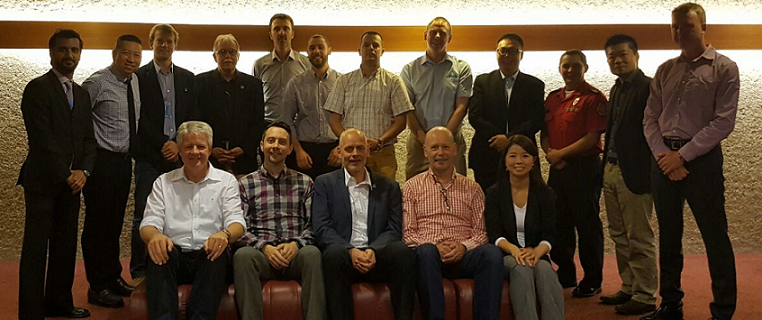

At the INSARAG Steering Group Meeting (ISG) in 2016 the group directed the secretariat to initiate the establishment of an INSARAG Light Teams Working Group (LTWG) with clear terms of reference and to request INSARAG regional groups to nominate suitable members. Relevant members from existing working groups could be co-opted. The LTWG will take the lead and, following consultations with the regional groups in 2016, present the recommendations to the ISG of 2017 for a decision.
The LTWG is made up of representatives coming from the three INSARAG Regional Groups, and are selected from different USAR Teams Heavy, Medium and non-classified teams selected by the Secretariat. The LTWG is chaired by Arjan Stam, Team leader from the Dutch USAR team, chair of the UCC in the earthquake of Nepal, IEC/IER Team leader and member of the GRG.
The first meeting of the LTWG was held in Geneva from 15-17 June 2016, and was also attended by the chair of the TWG Mr. Dewey Perks.
Chairman's Summary - First LTWG Meeting 15-17 June 2016
Proposal External support and Validation process National Accreditation_ENG
Member of TLWG:
Chair - Arjan Stam, USAR NL, Netherlands, Email: arjan.stam@brandweer.vrhm.nl
Deputy Chair - Rob Davis, SAR AID, UK
Christian Baroux, French USAR, France
Johannes Gust, At Fire, Germany
Cem Behar, GEA, Turkey
John Ball/ Christian Pritchard, IRO
Brad Commens, AUS-1 QLD Fire Services, Australia
Ruihua Zhao, China EQ Administration, China
Jorge Montanero, Bomberos de Guayaquil, Ecuador
